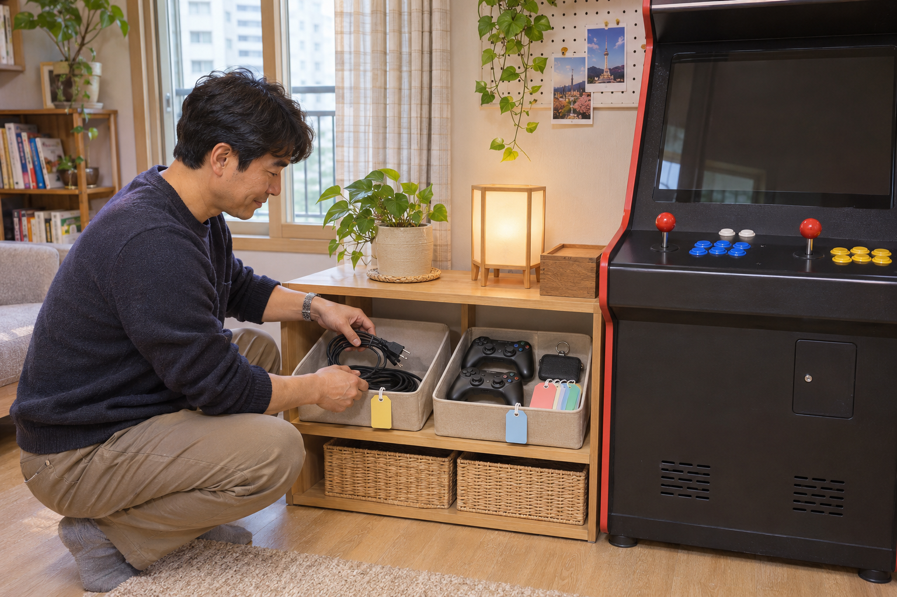
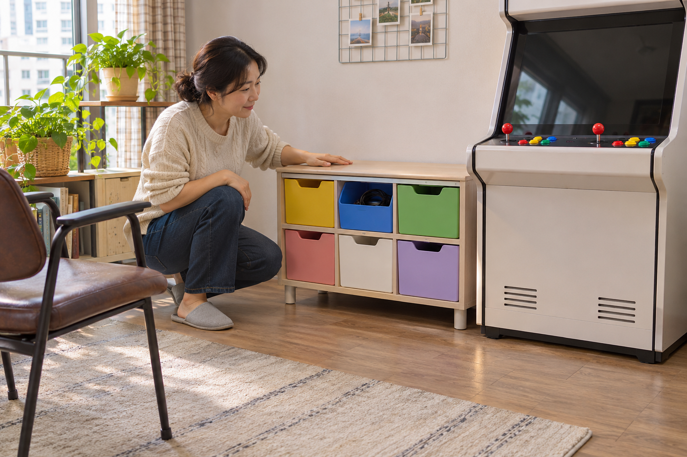

오락기 옆 구성품 수납공간은 제품과 용도별로 물건을 나누고, 본체 통풍구와 조작부 앞 공간, 사람과 의자의 이동 경로를 막지 않는 위치에 마련하세요. 낮고 흔들리지 않는 수납장이나 상자를 사용하고 케이블, 조작기, 열쇠 같은 작은 부품을 각각 표시하면 다시 연결하거나 문의할 때 필요한 물건을 찾기 쉽습니다. 음료와 간식은 같은 수납공간에 두지 마세요.

구성품을 제품과 용도별로 먼저 나누세요
구성품을 한 상자에 모두 넣기 전에 어느 제품에 연결하는지와 언제 사용하는지를 기준으로 나누세요. 전원선과 화면 연결선, 게임패드처럼 자주 쓰는 조작기, 열쇠와 작은 공구처럼 분실하기 쉬운 부품을 각각 다른 상자나 칸에 두세요. 서로 비슷한 선이 있다면 제품명과 연결 위치를 적은 분리 가능한 표식을 양쪽 끝에 붙이고, 정리 전 연결 상태를 사진으로 남겨 두세요.
구성품은 제품명과 연결 용도별로 나누어야 다시 사용할 때 잘못 연결하는 일을 줄일 수 있습니다.
노리박스 공개 제품 목록에는 무선 분리형 조이스틱 세트, 오락기용 220V 전원케이블, 전용 오락기열쇠가 각각 안내되어 있습니다. 제품마다 구성품과 연결 방식이 다를 수 있으므로 비슷하게 생긴 물건을 한데 섞지 말고 실제 제품명과 주문 정보를 기준으로 분류하세요. 주문 정보를 함께 보관하는 방법은 오락기 구매 후 주문 정보 보관 방법에서 확인할 수 있습니다.

통풍구와 조작 동선을 피해 수납 위치를 정하세요
수납장은 본체 옆면이나 뒷면의 통풍구를 가리지 않고, 조작부 앞에서 서거나 의자를 빼는 동작을 방해하지 않는 곳에 두세요. 문을 열고 사람이 지나갈 때 모서리에 부딪히지 않는지 확인하고, 흔들리거나 기울어진 선반 위에는 구성품을 쌓지 마세요. 바닥에 두는 상자는 전원선과 화면선을 누르지 않도록 케이블 경로와 분리하세요.
수납장은 통풍구와 조작부 앞 공간을 침범하지 않고 문과 의자의 이동을 막지 않아야 합니다.
조작부 앞에서 필요한 움직임은 오락기 조작부 앞 공간 확인 방법을 참고하고, 수납장을 둔 뒤에도 같은 동작을 다시 시험하세요.
케이블과 작은 부품은 각각 보관하세요
케이블은 꺾이거나 눌리지 않도록 느슨하게 정리하고, 양쪽 끝이 보이게 보관하세요. 작은 열쇠와 어댑터, 공구는 뚜껑이 있는 별도 상자나 주머니에 모으되 어떤 제품용인지 표시하세요. 밀폐 용기를 선택했다면 넣기 전에 구성품과 상자 안쪽에 물기가 없는지 확인하고, 본체에서 분리한 직후에는 제품 안내에 따라 상태를 살핀 뒤 보관하세요.
케이블 양쪽 끝과 작은 부품을 따로 표시하면 재설치와 문의에 필요한 상태를 찾기 쉽습니다.
케이블을 실제 설치 위치에서 정리하는 순서는 오락기 케이블 정리 방법에서 이어서 확인할 수 있습니다.
- 제품명과 연결 위치를 적은 분리 가능한 표식
- 전원선·화면선·조작기를 나눈 보관 칸
- 열쇠와 작은 공구를 담는 별도 상자
- 정리 전 연결 상태와 보관 위치 사진
사용 뒤 제자리로 돌아오는 기준을 만드세요
수납장 각 칸의 용도를 정하고 사용 뒤 같은 위치로 돌려놓으세요. 보관 위치를 사진으로 남기면 가족이 함께 사용할 때도 빠진 구성품을 확인하기 쉽습니다. 정기적으로 상자를 열어 케이블이 눌렸거나 표식이 떨어지지 않았는지 살피고, 제품명이나 연결 방법이 불분명한 물건은 임의로 연결하지 말고 판매자에게 정확한 제품명과 사진으로 문의하세요.
사용 후 사진과 정해진 수납 위치를 함께 확인하면 빠진 구성품을 바로 알아볼 수 있습니다.
현재 노리박스 오락실게임기와 별도 구성품은 제품자세히보기에서 확인할 수 있습니다.